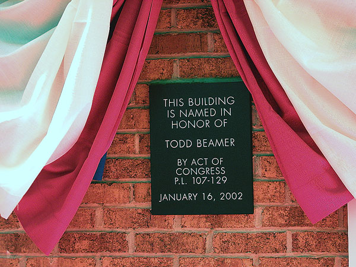
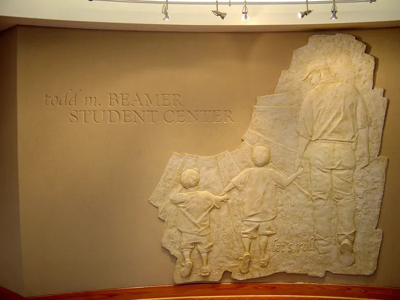
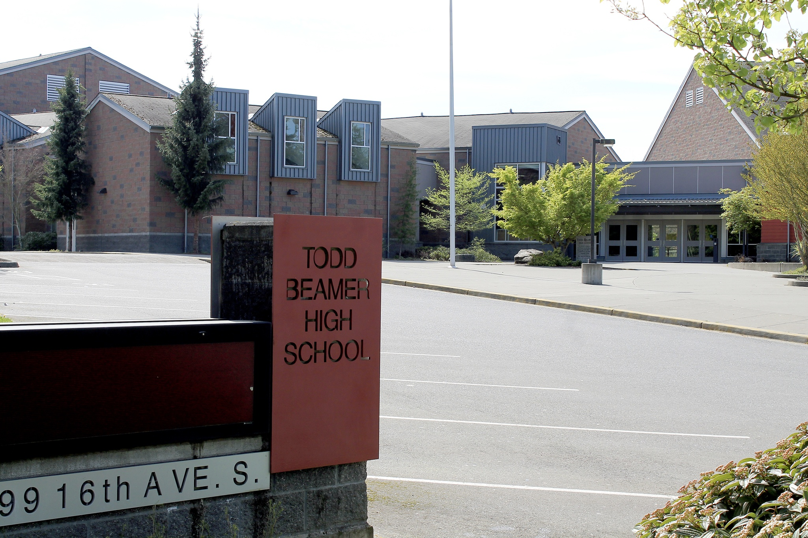
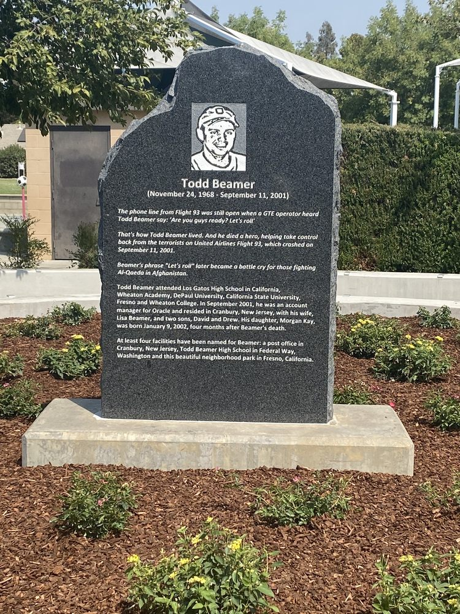

Todd Morgan Beamer at 2000
Todd Morgan Beamer at 2000
Here are some mentios in his memory

- In 2002, Beamer's widow, Lisa, wrote a book with coauthor Ken Abraham, Let's Roll! Ordinary People, Extraordinary Courage.

- The Cranbury, New Jersey post office was dedicated to Beamer on May 4, 2002

- In 2003, Wheaton College honored Beamer, an alumnus, by opening the Todd M. Beamer Center

- Todd Beamer High School opened in Federal Way, Washington in 2003.
- In 2006, Premier Flight 93 a movie about 11 september attack

- In February 2010, the city of Fresno, California dedicated Todd Beamer Park
- On September 2013, Wheaton Academy honored Beamer by unveiling a plaque dedicated to him on the grounds of the Academy